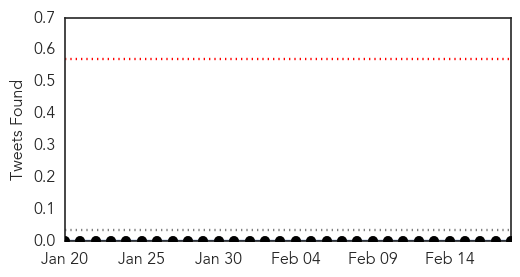
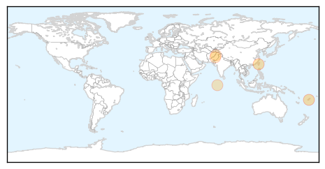
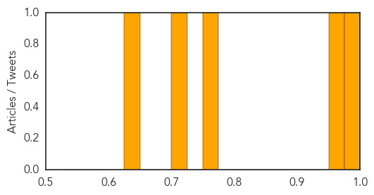

Influenza
30-Day Web Trend
0 alerts, 0 warnings
30-Day Twitter Trend
3 alerts, 0 warnings

Article Locations

Article Confidences

Top Articles:
- 0.995
- Malaysia Confirms H7N9, Cases Continue To Surge In Mainland China
- 0.963
- Another Death Due To Avian Influenza In China
- 0.959
- China confirms H5N1, goat plague cases
- 0.956
- China confirms eight additional avian flu cases
- 0.816
- Study Revives Bird Origin for 1918 Flu Pandemic
- 0.804
- Coroner: Flu related death in Dorchester County - Live5News.com
Top Tweets:
- 0.805
- RT: Not Swine Flu - the strain of influenza that caused the 1918 pandemic probably came from birds http://t.co/QQVbNPOB0I …
Dengue Fever
30-Day Web Trend
1 alerts, 6 warnings

30-Day Twitter Trend
1 alerts, 0 warnings

Article Locations
Article Confidences
Top Articles:
Top Tweets:
-
No tweets found for Feb 18, 2014